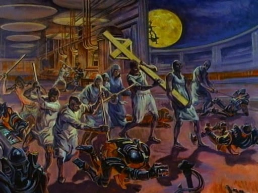

The era of AGI? Ask the Sci-fi prophets.
The “AGI era” is less about the technology and more about our attitudes around the technology. As I was reading the news (and hype) about Astra this morning, my copy of Pope Leo XIV’s Magnifica Humanitas sitting here next to me seemed like one of the most important documents written in my lifetime. At the same time, Brian Herbert’s (son of Frank Herbert) Dune: The Butlerian Jihad suddenly seemed prophetic. I think the question is less “are we ready” for AGI, and more about whether-or-not we’re ready for the global disruption to the idea of “work” that’s unfolding before our eyes. It always strikes me as odd that the conversation around A.I. centers almost solely around how close we are getting to be freed from work. How will we make a living in the post-AGI era? How will we feel a fulfilling sense of accomplishment, growth, and learning in our work without the annoyances and frustrations that go along with it? Why is it that we think, in our pursuit of freedom from work, that we’re not becoming slaves to the machines?
This From the Wall Street Journal’s CIO Newsletter this morning:
There’s no standard definition of AGI, and that makes it hard to assess when it has arrived. Venture-capital investor Vinod Khosla told me almost two years ago that he “describes it as the point at which AI can perform 80% of the work involved in 80% of the world’s economically valuable jobs.” While we may not clear that bar for some time, it feels more and more inevitable that we will before too long, and that’s why I think we’re beginning to enter the era of AGI.
Fun fact: The Butlerian Jihad is somewhat of a tribute to the Victorian Era author, Samuel Butler. His letter, Darwin Among the Machines (1863), an ironic and satyrical read about “machinery” being almost superior to us humans, but not because of their intelligence, per se, but because of their efficiency: they don’t succumb to our moral shortfalls:
Inferior in power, inferior in that moral quality of self-control, we shall look up to them as the acme of all that the best and wisest man can ever dare to aim at. No evil passions, no jealousy, no avarice, no impure desires will disturb the serene might of those glorious creatures. Sin, shame, and sorrow will have no place among them. Their minds will be in a state of perpetual calm, the contentment of a spirit that knows no wants, is disturbed by no regrets. Ambition will never torture them. Ingratitude will never cause them the uneasiness of a moment. The guilty conscience, the hope deferred, the pains of exile, the insolence of office, and the spurns that patient merit of the unworthy takes—these will be entirely unknown to them.
Of course, that’s the irony. A created thing always takes on the nature of its creator. This is the reason why the Orange Catholic Bible (in the Dune universe) exists - humanity needed to realign with a collective moral foundation after the Crusade against the machines and their inventors…From Dune:
“Once men turned their thinking over to machines in the hope that this would set them free. But that only permitted other men with machines to enslave them."— Reverend Mother Gaius Helen Mohiam (quoting the Orange Catholic Bible)
From Pope Leo’s Magnifica Humanitas:
Work remains a fundamental dimension of the human experience, for not only is it a means of sustenance, but it is also a context for expression, relationships and contributing to the community.” … “In this context, without bold decisions, the prospect of greater poverty and inequality looms large, which would leave many individuals marginalized, stranded and surrounded by the machines and automated systems that have replaced them.


Finished reading: Two X Two by John Sondag 📚
A fun and hilarious novel by John Sondag, a Director of Religious Education here in the Twin Cities. The transition of priests/pastors/leaders from ministry can always be a difficult and challenging process, but when we find common ground in realizing the Church is bigger than all of us, we can rest assured that Truth will not only prevail, but will be the great motivation for our main purpose in ministry - the salvation of souls. In a world of fuzzy and fleeting moral therapeutic deism, our parishioners are better for our being grounded in Catholic Identity.
This excellent article from Dr. Nigel Cundy (the Quantum Thomist) - Does God cause the grass to grow?, reminds me a bit of how necessary childlike wonder is, and how we should all read more Chesterton. Here’s a quote from Orthodoxy:
It may not be automatic necessity that makes all daisies alike; it may be that God makes every daisy separately, but has never got tired of making them. It may be that He has the eternal appetite of infancy; for we have sinned and grown old, and our Father is younger than we. The repetition in Nature may not be a mere recurrence; it may be a theatrical encore.
Excited about this new episode, Why Productivity Isn’t Everything, Your Worth More than Your Work - Nerding Out ep48 - That Nerdy Catholic, as That Needy Catholic continues walking through Pope Leo’s Magnificat Humanitas.
My wife sent me this article a few days ago and it is compelling. Evangelicals churches ditched this a decade ago and are finally starting to come back to reality, which is why you’re seeing their young people jump into volunteer service: they’re raising up leaders. We’re 10 years behind:
We cannot build a consumerist model of parish and then be surprised when consumers behave like consumers…Yet, the real risk is continuing to do what is not working. Doubling down on bulletins, pulpit announcements, and better marketing treats this issue as a messaging problem. It is not a messaging problem.
Pentecostal Roundtable
Was blessed to be a part of a “Pentecostal roundtable” discussion with the Coming Home Network’s Journey Home show that aired last night on EWTN.
What you don’t see are all the amazing conversations Marcus and I had leading up to the discussion as we shared memories, experiences, and how we as Pentecostals full of the Spirit and both raised in the Assemblies of God found this treasure that we both see as the Catholic Church - the Church that Christ founded. We joked that, had this been a meeting 15 years ago, the two of us would have started our own church in a storefront somewhere- we had all we needed: the preacher and the worship leader!
Once you’re living in the sacramental life, once you have a sacramental worldview, it’s hard to see our experiences in Pentecostalism in the same way ever again. We admitted often that day how blessed we feel now that we’re home in the Church, and how much we were missing out on until we found the fullness of the Faith in the Church. Thanks be to God!
Revelation Resources
I’ll be giving a talk this week with the deacon at my parish to wrap up our study on the book of Revelation, and I get to tackle Ch. 20, which I also happen to be quite passionate about as I’ve studied and researched the various interpretations of “the millennium” for years. I thought it’d be helpful to list out some of my favorite reads that I revisit often related to the End Times, the Book of Revelation, and Eschatology:
- The Rise and Fall of Dispensationalism: How the Evangelical Battle over the End Times Shaped a Nation, Daniel G. Hummel.
- Revelation: Four Views, A Parallel Commentary, Revised & Updated Edition, Steve Gregg.
- Before Jerusalem Fell: Dating the Book of Revelation, Kenneth L. Gentry, Jr.
- The Days of Vengeance: An Exposition of the Book of Revelation, David Chilton.
- The Great Tribulation, David Chilton.
- Josephus: The Complete Works, Translated by William Whiston.
- The Annals & The Histories of Tacitus, Edited by Moses Hadas.
- The First, Second and Third letters of St. John and the Revelation to John (Ignatius Catholic Study Bible), Scott Hahn & Curtis Mitch.
- The Navarre Bible: Revelation, Text and Commentaries, University of Navarra
- Rapture: The End-Times Error That Leaves the Bible Behind, David B. Currie.
- Will Catholics Be Left Behind: A Critique of the Rapture and Today’s Prophecy Preachers, Carl E. Olson.
- Grace and Vocation Without Remorse: Comments on the Treatis De Iudaeis, Communio: International Catholic Review 45, Pope Benedict XVI.
- This document, included in the posthumously published book What is Christianity?: The Last Writings by Pope Benedict XVI is an excellent reflection piece.
- Eschatology: Death and Eternal Life, Pope Benedict XVI.
- Revelation Expounded: Eternal Mysteries Simplified, Finis Jennings Dake.
- This book is on my list despite its reputation and Finis Dake, because it was the first study on Revelation I received when I was around 14 years old, a gift from my wonderful Sunday School teacher at our Assemblies of God church after expressing fear of the coming rapture and tribulation. I’ve probably looked through it searching for answers dozens of times over the years, and it turned into quite strong reference material when I began researching Catholicism and orthodox teachings on Revelation (and all of scripture), ultimately leading me to question, “by what authority is scripture interpreted?” I like to keep it around to re-educate myself on certain Evangelical (popular?) biblical interpretive methods.
There are talks, podcasts, articles, and so many other resources I’ve consumed over the years (not to mention the writings of the Church Fathers and other past theologians), but I’ll mention those in other notes and threads another time. For now, we’ll go with the above list of published books and articles (some online for free) as a quick window into some of my favorite research materials on the subject.